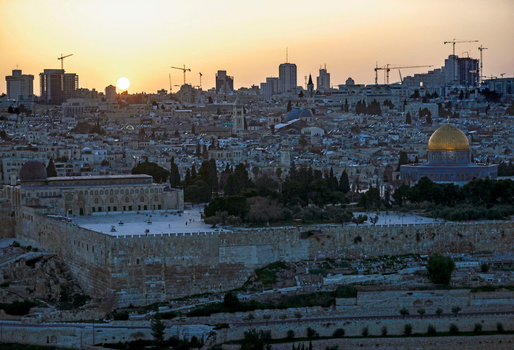

The Israeli–Palestinian conflict is one of the world's most enduring hostilities, with the Israeli occupation of the West Bank and the Gaza Strip reaching 54 years. Various attempts have been made to resolve the conflict as part of the Israeli–Palestinian peace process.
Public declarations of claims to a Jewish homeland in Palestine, including the 1897 First Zionist Congress and the 1917 Balfour Declaration, created early tension in the region. At the time, the region had a small minority Jewish population, although this was growing via significant Jewish immigration. Following the implementation of the Mandate for Palestine, which included a binding obligation on the British government for the "establishment in Palestine of a national home for the Jewish people" the tension grew into sectarian conflict between Jews and Arabs. Attempts to solve the early conflict culminated in the 1947 United Nations Partition Plan for Palestine and the 1947–1949 Palestine war, marking the start of the wider Arab–Israeli conflict. The current Israeli-Palestinian status quo began following Israeli military occupation of the Palestinian territories in the 1967 Six-Day War.
Despite a long-term peace process, Israelis and Palestinians have failed to reach a final peace agreement. Progress was made towards a two-state solution with the 1993–1995 Oslo Accords, but today the Palestinians remain subject to Israeli military occupation in the Gaza Strip and in 165 "islands" across the West Bank. Key issues that have stalled further progress are security, borders, water rights, control of Jerusalem, Israeli settlements, Palestinian freedom of movement, and Palestinian right of return. The violence of the conflict, in a region rich in sites of historic, cultural and religious interest worldwide, has been the subject of numerous international conferences dealing with historic rights, security issues and human rights, and has been a factor hampering tourism in and general access to areas that are hotly contested. Many attempts have been made to broker a two-state solution, involving the creation of an independent Palestinian state alongside the State of Israel (after Israel's establishment in 1948). In 2007, the majority of both Israelis and Palestinians, according to a number of polls, preferred the two-state solution over any other solution as a means of resolving the conflict.
Within Israeli and Palestinian society, the conflict generates a wide variety of views and opinions. This highlights the deep divisions which exist not only between Israelis and Palestinians, but also within each society. A hallmark of the conflict has been the level of violence witnessed for virtually its entire duration. Fighting has been conducted by regular armies, paramilitary groups, terror cells, and individuals. Casualties have not been restricted to the military, with a large number of civilian fatalities on both sides. There are prominent international actors involved in the conflict. A majority of Jews see the Palestinians' demand for an independent state as just, and think Israel can agree to the establishment of such a state. The majority of Palestinians and Israelis in the West Bank and Gaza Strip have expressed a preference for a two-state solution. Mutual distrust and significant disagreements are deep over basic issues, as is the reciprocal skepticism about the other side's commitment to upholding obligations in an eventual agreement.[
The two parties currently engaged in direct negotiation are the Israeli government, led by Benjamin Netanyahu, and the Palestine Liberation Organization (PLO), headed by Mahmoud Abbas. The official negotiations are mediated by an international contingent known as the Quartet on the Middle East (the Quartet) represented by a special envoy, that consists of the United States, Russia, the European Union, and the United Nations. The Arab League is another important actor, which has proposed an alternative peace plan. Egypt, a founding member of the Arab League, has historically been a key participant. Jordan, having relinquished its claim to the West Bank in 1988 and holding a special role in the Muslim Holy shrines in Jerusalem, has also been a key participant.
Since 2006, the Palestinian side has been fractured by conflict between two major factions: Fatah, the traditionally dominant party, and its later electoral challenger, Hamas, which also operates as a militant organization. After Hamas's electoral victory in 2006, the Quartet conditioned future foreign assistance to the Palestinian National Authority (PA) on the future government's commitment to non-violence, recognition of the State of Israel, and acceptance of previous agreements. Hamas rejected these demands, which resulted in the Quartet's suspension of its foreign assistance program, and the imposition of economic sanctions by the Israelis. A year later, following Hamas's seizure of the Gaza Strip in June 2007, the territory officially recognized as the PA was split between Fatah in the West Bank and Hamas in the Gaza Strip. The division of governance between the parties had effectively resulted in the collapse of bipartisan governance of the PA. However, in 2014, a Palestinian Unity Government, composed of both Fatah and Hamas, was formed. The latest round of peace negotiations began in July 2013 and was suspended in 2014.
In May 2021, amidst rising tensions, the 2021 Israel–Palestine crisis began with protests that escalated into rocket attacks from Gaza and airstrikes by Israel.